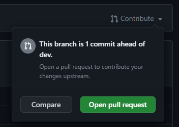

LAPCAP Bible
LAPCAP Model Development Plan
This document is a plan for model development, quality assurance and signoff processes of LAPCAP. It includes detail on how, when and by whom model, data or assumption changes will be assured. This includes a list of responsibilities relating to the model, who the model owner is, the governance structure and decision-making process supporting the model.
The below diagrams give an overview of the processes, with more detail included in later sections.
Coding Process

Signoff Process

Stakeholder Groups
- Senior Responsible Officers (SROs)
- Director of Resources & Waste (Emma Bourne) and equivalents in the Devolved Administrations (David McPhee, Rhodri Asby, Shane Doris).
- pEPR Project Board
- Senior level oversight and support for the delivery of the joint UK-wide pEPR. Chaired by Dexter Davis.
- Model Owner
- G6 head of Fees and Payments Calculator team (Tristan Ibrahim).
- Advisory Groups
- Analytical Board - consists of senior analysts from England, Wales and Scotland
- Technical Working Group (TWG) - comprising expert waste advisors to Defra and the devolved administrations
- Local Authority Waste Officer Sounding Board – selected Waste Officers from local authorities across the UK
- Government Actuary’s Department – to date external QA has been provided by GAD
- Fees and Payments Calculator modelling team
- Made up of members of the Government Operational Research profession, ensuring necessary modelling skills.
Named individuals correct as of 3/2/2025
Coding Process Detail
1. Decide to change code
The modelling team, led by G7s, will identify the most important changes needed ahead of the next release of modelling outputs.
They may choose to make use of the Analytical Board, TWG or Sounding Board in determining this.
They may also choose to seek signoff of their plans from the model owner or project board, or to simply make them aware, to ensure planned changes are expected.
An agile methodology using Jira is then used to plan out the delivery of these changes. Time for quality assurance should ALWAYS be built into each ticket in this planning, it should be understood that if there is not time for quality assurance then there is not time for the work.
2. Make changes to code
Through R Studio and Github changes are made to the existing LAPCAP model. This will be achieved through standard Git practice, e.g. branching off from the dev branch. Instructions for how to do this can be found in the new starter section.
The changes required should be clearly laid out in the relevant Jira ticket.
- If the changes involve adding, removing or changing an assumption then the modelling team member must update the relevant assumption log:
How to change an assumption
Identify an assumption.
We define assumptions as “choices analysts make to correct for low quality or absent data or information, that knowingly introduce inaccuracy into our outputs.”
Questions to help you determine whether a section of code is an assumption could be:
- Have you had to make a specific choice for how to model?
- Is your choice a simplification of reality?
- Theoretically were there other choices you could have made?
- Would changing your choice affect the final number?
- Is this information recorded elsewhere (e.g. in a data log or the technical document)?
Record your assumption in-code
Paste the following code snippet below the relevant portion of code and edit to reflect the above.
# Assumption: Title of assumption # RAG: RED # Detailed description # on next line or many.The title of the assumption should be short, clear and unique to this assumption.
The RAG rating is a red, amber or green rating summarising both the quality (e.g. how confident we are) and impact (e.g. how much model outputs are likely to be affected) of the assumption.
The detail description should give all information needed for someone to understand the assumption, including why an assumption is needed, why you have made the choice and more.
Record your assumption in the relevant assumptions log
Each module has its own assumptions log which you can find via the Documentation Overview section above.
You will need to fill out the following fields:
ID - prefilled
Assumption title - same as reported in code
Detailed description - same as reported in code
Reporter - your name
Script(s) - which R script the assumption can be found in
Line(s) in code - which lines in the script are relevant
RAG - same as reported in code
RAG explanation - an explanation for why you gave the above RAG rating
Links to supporting evidence - any supporting evidence that you used in formulating this assumption, which should be stored in the corresponding ‘Supporting Evidence’ folder
- If the changes involve updating a data import then the data pipeline must be refreshed and data logs updated:
How to change a data input
ANDREW WRITING
Data Pipeline
The data pipeline should be run to update the data folder prior to a new version of the model being tagged (ensure to restart your R session and clean your environment before running the pipeline)
Before the new version is tagged, you need to change the model_version parameter in the data pipeline and run it, and change the model_version parameter in run_LAPCAP_model, then push these changes before tagging the version
If you are attempting to overwrite a folder then you will be asked to confirm – you should be sure that you want to overwrite the folder as this could prevent rolling back in the future
Ensure that people are aware of a new version being tagged so they can rebase if necessary
Versioning Vx.y.z
The first number, x, should be updated when figures and published externally
The second number, y, should be updated when figures are shared internally (e.g. Simpler Recycling)
The third number, z, should be updated when there are changes to the data or data pipeline
These versions should be tagged on dev on github to allow easy rollback to model versions
When numbers are published externally and the first number updated, dev should be merged into main
If model logic is changed then the technical document, code comments and roxygen headers must be updated accordingly.
Additionally unit tests may need adding or updating.
How to update the technical document
MARCUS TO WRITE?
How to write a unit test
NONO WRITING
- If the changes result in a functional change to the model, i.e. the changes will effect model outputs, then validation checks must be carried out.
How to run validation checks
Check the percentage difference between the outputs from the last tagged version of LAPCAP and the output of whatever changes you have made
Use the spreadsheet “[model_version] model output sensitivity testing.xlsx” on the Module B1 Sharepoint, within 00 Model Master folder > [model_version]
Follow the instructions in the first sheet.
The spreadsheet automatically highlights any percentage changes above the acceptable threshold. If values become highlighted, make sure to check with a Grade 7 whether the need for the change justifies the change in outputs.
Generate and inspect the Critical Success Factors (CSF) markdown to ensure the change hasn’t violated any of the success factors
Use the function generate_validation_markdowns() in documents in the LAPCAP repo to generate the markdown, following the instructions in the function’s roxygen header
Inspect the output, ensuring that each CSF is still being met. If you have any concerns, raise them with a G7 or above.
Download a version of the output so you can link it in the pull request template later.
Locations for assumption log, data log or the technical document can be found in 01 Documentation Overview.docx, and each includes instructions for how to use it.
How to make a pull request
Once the modelling team member has completed their changes, they should make a pull request and request a review from another member of the team.
Here are the step-by-step instructions to submit a pull request:
Go to the relevant repo on Github and navigate to your branch
Use either the branches drop down or click on ‘x branches’ to go to the branches page and select your branch.
If your push was recent there may be a pop up allowing you to ‘compare and pull request’, if not then click ‘Contribute’ and ‘Open pull request’.

Now check your pull request is set up correctly:
Make sure you are merging to the correct branch, this will usually be dev (for code in development) or sometimes main if it has been fully quality assured.
Fill out the pull request template (following carrying out validation checks, see below), including adding any additional QA checks to the list.
Replace this gif with one that describes how you felt about completing this ticket:
✔️ QA checklists
üìù Description of changes made:
üéüÔ∏è Link to Jira ticket:
ü§î Link to QA log (assumptions or data log), if changed:
üíæ If appropriate, link to CSF markdown:
üìà If appropriate, link to output percentage change spreadsheet:
% change in EPR Total Net Cost Mean absolute change per LA Overall England Scotland Wales NI üåú Do-er QA checklist
Before submitting a pull request the principle analyst must have completed the below checks.
Click ‘Reviewer’ and select the person who has agreed to review your code.
Make sure you have completed the requirements and fill out the fields in the pull request template.
Then you can click ‘Create pull request’.
- Once you have created the pull request you should move the ticket to ‘For Review’ on Jira.


3. Verify the changes
Once assigned a review the team member must complete the full checklist provided by the principle analyst. It is also the QAers must also review the list critically and ensure that it is both appropriate and sufficient. If the QAer feels otherwise they must raise this with in the first instance the principle analyst and then failing this the model owner.
You should use the checklist below, which is also included in the pull request template, to ensure you carry out all necessary checks:
üåõ Checker QA checklist
Before approving a pull request the reviewer must have completed the below checks: In addition to the above, the following is a checklist for the reviewer to use:
Also you should carry out any additional checks required, which have been added to the Checker Checklist by the doer.
Reviewers should trace the full logic of the code, both by reading through it and by running it and spot-checking intermediate data frames. They should inspect any relevant data imports both in R Studio and directly from their original source. They should examine model outputs before and after the changes to ensure they make sense. They should make sure they are able to replicate any processes or calculations in the code.
Additional checks
The below is a list of QA checks that reviewers may want to perform in addition to the above. Note that this lists is not exhaustive and it is the responsibility of the principle analyst (do-er) and the QAer (checker) to ensure all items that need to be checked have been:
1. Check that the calculations done are fit for purpose and are correct
2. Check that uncertainty has been considered and appropriately accounted for (e.g. has sensitivity analysis been performed)
3. Check that the data used is fit for purpose and the best option available to us
4. Check that other appropriate documentation has been completed or updated to an appropriate standard e.g. the technical document
5. Is the data being correctly pulled into the model?
6. Is the data being properly cleaned and manipulated (either before the model or during the code)?
7. Has the data been verified and validated? Has it been checked for potential errors? And has it been confirmed that the data appropriate to use in the first place? Is it the best possible option?
8. Are there other results other than the outputs of the last model that the results need to be compared to?
9. In cases where new data is added, or a change is heavily dependent upon a particular data source, does the model respond as expected to extreme values, negatives, zeroes, NAs etc? Is it possible to break the model with the data or generate impossible results?
Reviewers should leave comments via GitHub, to ensure a record of verification and validation. GitHub has several features to help with this such as filtering changes by commit or file type, marking scripts as viewed, making direct code suggestions and bundling many comments into one review.
These reviews may go through one or more cycles of requesting changes, in order for the reviewer to be happy. GitHub has functionality to enable this.
The following explains the practical steps followed in when reviewing code:
How to do a code review
This Github code review tutorial shows you how to review a pull request, or you can follow the steps below.
Follow these step-by-step instructions to do a proper code review:
Navigate to the ‘pull request’ that has been assigned to you. Read the description provided and use the checklist to aid your review.
Switch to the ‘Files changed’ tab to see the changes made, here you can make comments and suggestions as you see fit by clicking the blue plus to the left of the line you want to comment on.
- Make sure to tick ‘Start a review’ rather than ‘Add single comment’.
- Github has lots of functionality to make this process easier, including being able to mark scripts as ‘Viewed’ and limiting changes to certain commits.
- You should also run the code in R Studio and check the relevant QA log has been updated.
When you are ready click ‘Finish your review’ add a summary comment and then click ‘Submit review’. You may choose to leave comments to be responded to, suggest changes to be made or simply approve the pull request straight away.


ADD BIT ABOUT PETER REVIEWING PRs AND RECORDING
4. Merge changes into dev branch
Once approved, changes should be merged into the dev branch. This may require resolving merge conflicts.
How to merge
Once your reviewer has inspected your code they may ask you some questions or suggest some changes. Once you have responded to these they will approve your pull request and you can merge your changes! This will look like:
Note: if any of the QA checklist items have been left unchecked, GitHub will automatically block merging. It will look like:
You will need to check there are no ‘merge conflicts’. This is where someone has changed the same files as you and so you need to agree with that person what are the correct changes and modify accordingly, Github will read ‘Able to merge’ indicating there are no conflicts.


Signoff Process Detail
1. Model development complete
Once all changes required for a publication or sharing of the model are complete, the team will undertake the following steps.
Multiple pull requests will have been merged into dev (e.g. the above coding process will have been repeated multiple times) and these will all receive signoff together.
There are some circumstances where the full signoff may not be required for instance, sharing the model internally, this is left to the judgment of the model owner.
2. Model owner signoff
The model owner should sign off on the following documents, which should have been updated:
VALIDATION STUFF (PROCESS TBD)
VERIFICATION STUFF (PROCESS TBD)
CHANGE LOG (RENAME)
Technical Document
Assumptions Logs
Data Log (?)
The model owner does not necessarily have to review all of these themselves; they may utilise the advisory groups to offer assurance. For instance, in the past TWG have assured on assumptions logs.
The model owner’s signoff for that model version should be stored in SIGNOFF LOG (EMAIL EVIDENCE).
3. SRO signoff
Project board, acting on behalf of the model SROs, should signoff the model version for publication.
It is unlikely that members of project board will review any of the model or its documentation themselves, however copies should be shared so they have the option to, and can delegate to members of their organisation.
Instead, summaries of changes, visualisations of overall outputs and assurances from advisory groups may be presented. Exactly what is required may depend on the specific changes being signed off, so is left up to the judgment of the model owner.
There may be an additional stage of parameter setting, at this point in the approvals process, especially for the first outputs for each new year of EPR.
The project board signoff for that model version should be stored in SIGNOFF LOG (MEETING MINUTES AS EVIDENCE?).